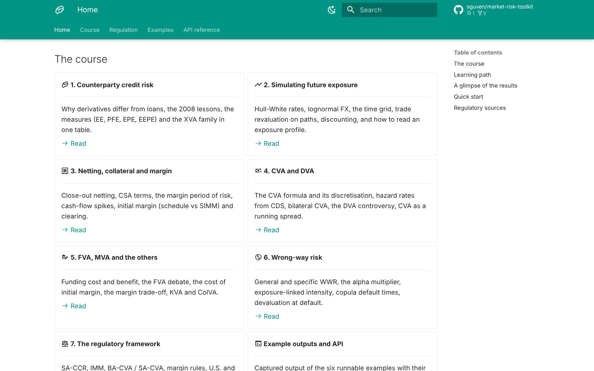
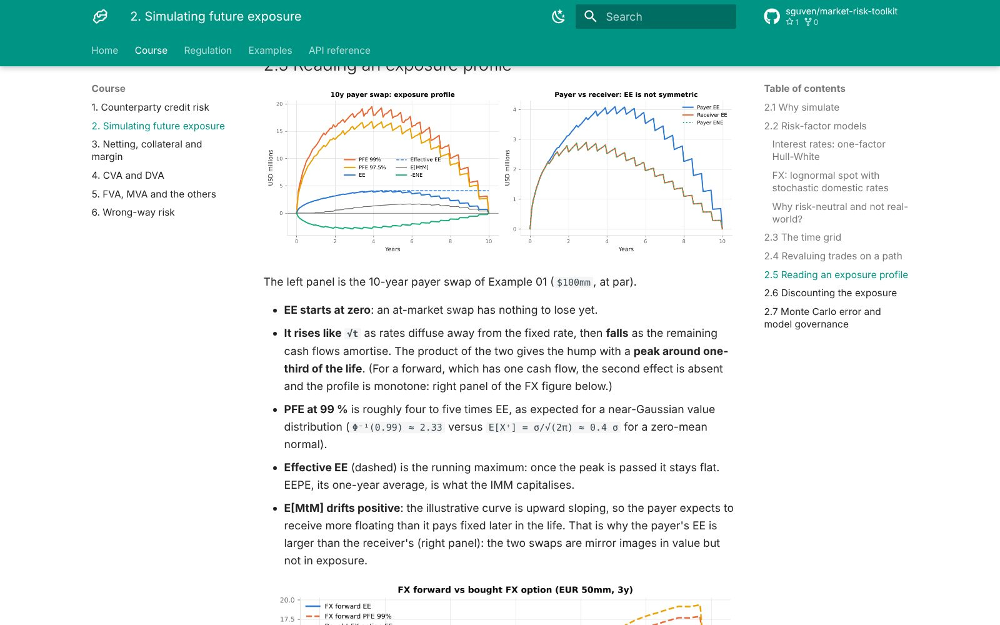
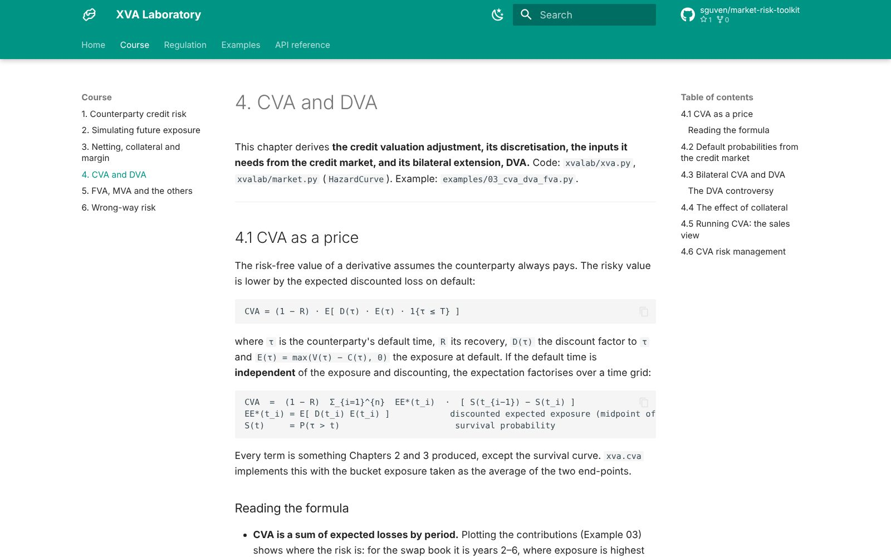

XVA Laboratory
A free online course and Python library on counterparty credit risk: simulating exposure, netting and collateral, the XVA adjustments and the Basel and U.S. rules behind them.
- Role
- Idea, structure and review, with Claude as coding partner
- Platform
- Web course (MkDocs) and a Python package
- Data
- Illustrative USD and EUR market data; not advice
- Status
- Live; part of the market-risk-toolkit repo

01 · Problem
What need does it solve?
Counterparty risk starts with a simple question: how much could this counterparty owe us on the day it defaults? Answering it takes simulation, legal terms like netting and collateral, credit curves and a stack of regulation.
These pieces are usually explained separately. The aim was one place where each step is explained, implemented and checked.
02 · Solution
How it works
Seven chapters are read in order, each backed by a module of the xvalab package:
- What counterparty credit risk is, and the exposure measures EE, PFE, EPE and EEPE
- Simulating future exposure with Hull-White interest rates and lognormal FX
- Netting, CSA collateral terms, the margin period of risk and initial margin
- CVA and DVA from CDS-implied default probabilities, then FVA, MVA and KVA
- Wrong-way risk and the regulatory framework: SA-CCR, IMM, BA-CVA and the margin rules






03 · Architecture
How the system fits together
Market curves, counterparties and trades feed a Monte Carlo engine that revalues every trade on every path and date. The resulting exposure is netted and collateralised according to the CSA, then turned into valuation adjustments and regulatory measures. On each push, GitHub Actions runs the tests and publishes the course as a sub-site of the RiskLab GitHub Pages deployment.
04 · Technology
What it is built with
| Models | Hull-White one-factor rates with exact simulation, lognormal FX, a hybrid model with a consistent numeraire |
|---|---|
| Instruments | Interest rate swaps, FX forwards and FX options, with SA-CCR leg descriptions |
| Adjustments | CVA, DVA, FVA (FCA / FBA), MVA, KVA and wrong-way risk models |
| Regulation | SA-CCR, IMM EAD, reduced BA-CVA and the standardised initial margin schedule |
| Tests and site | pytest suite of 36 checks; MkDocs Material, published to GitHub Pages |
05 · Challenges
Hard parts and how they were solved
Simulation that can be checked
Discounted bond prices must stay martingales on the simulated paths; the tests confirm this, so exposure numbers rest on a sound model.
Collateral is not a switch
Thresholds, minimum transfer amounts and the margin period of risk leave gaps and spikes in exposure. The engine models them explicitly instead of assuming full coverage.
Matching the regulator
SA-CCR is tested against the worked example the Basel Committee published, so the regulatory figures can be traced back to the source.
Being clear about limits
Each module lists what it simplifies, such as a single curve or deterministic foreign rates, so the results are read in the right context.
06 · Results
What came out of it
- One connected path from an exposure profile to XVA charges and counterparty capital, readable on any device.
- A tested Python library for exposure simulation and XVA that can be extended.
- Shows, for example, how much netting and a zero-threshold CSA reduce exposure, and what remains.